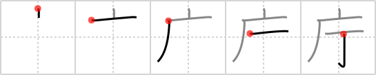

庁
← →
government office

Reading:
On-Yomi: チョウ、テイ — Kun-Yomi: やくしょ
Heisig story:
Cave . . . a spike.
Koohii stories:
1) [miknon] 14-8-2006(143): Some bureaucrats at a government office decided that the tunnels of caves need to get street signs, which are then nailed to the walls of the cave.
2) [alantin] 1-11-2007(123): In some of the scarier countries, when someone is invited to visit a "government office", it's actually a dungeon where they're dragged into a cave and nailed to the wall.
3) [gringozolano] 16-6-2008(98): Because of his caveman instincts, Clinton tried to nail Monica L. in his gov't office.
4) [thegeelonghellswan] 8-9-2008(56): The government office is on cave street.
5) [Harrow] 26-5-2009(24): Kafka portrayed a government office as a cavernous space with faceless bureaucrats nailed to their desks.